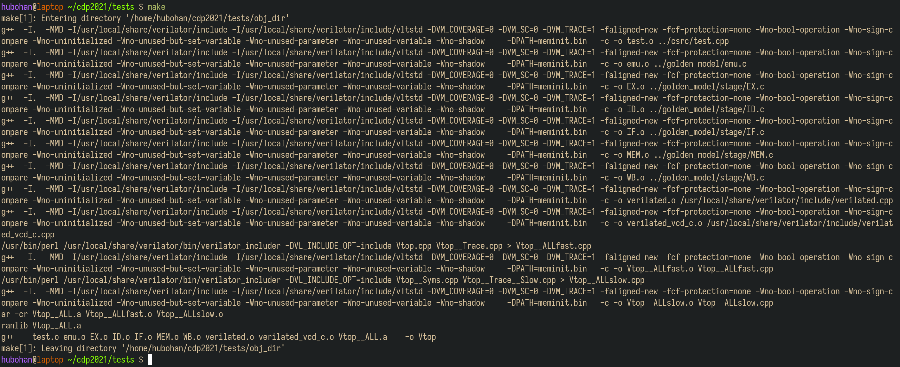
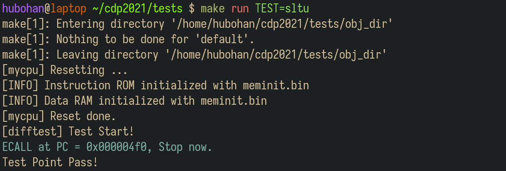
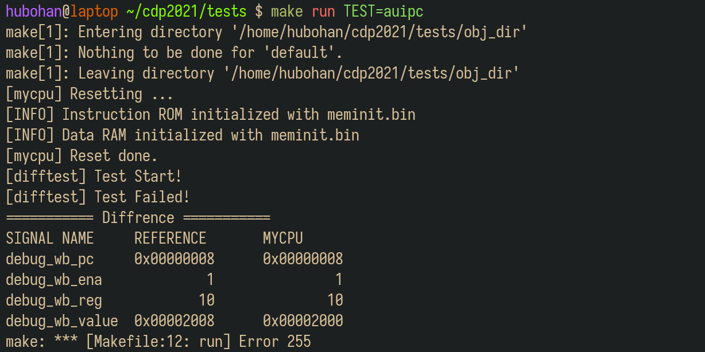
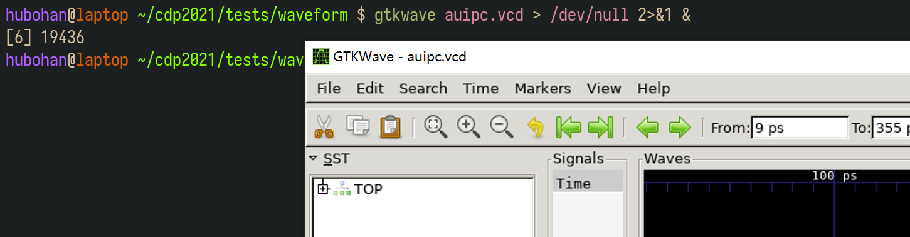
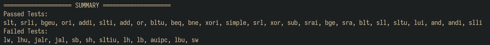

测试机制说明
1. 关于实验环境
Trace测试使用Linux系统部署测试环境，我们提供了三种实验环境供同学们选择：
（1）远程实验平台
远程实验平台已经将Trace部署在实验中心的服务器上，我们把所有依赖的配置都已经事先搭建完毕。无论你的电脑性能如何，无论你是在宿舍、实验室还是自习室，只要你还能连上校园网，你就能完成你的实验。具体使用方式详见附录1：远程实验环境使用指南。
Info
虽然我们已经做了一些方案保证远程环境的可靠性，但在某些特殊情况下，也不能确保不出故障，为安全起见，建议同学们将代码及时上传到git仓库或者下载到本地保存。
（2）本地虚拟机
我们提供了虚拟机镜像供同学们下载到你本地的电脑上运行。我们也帮你把所有依赖的配置都已经事先搭建完毕，你只需要下载、导入虚拟机即可使用。具体使用方式详见附录2：虚拟机使用指南。
（3）自行部署实验环境
同学们也可以尝试在自己的电脑上部署实验环境，体验一下自己动手的乐趣：）具体搭建方法详见附录3：实验环境部署指南。
2. 了解测试框架
请在终端里依次输入并执行下列命令，以拉取测试框架代码：
1 2 3 | |
关于miniLA 
实现miniLA指令集的同学，拉取测试框架时，请执行以下命令：
1 2 3 | |
cdp-tests目录的文件结构如下图所示。
.
├── bin（指令测试用例，用于初始化内存）
│ ├── add.bin
│ ├── .......
│ ├── xor.bin
│ └── xori.bin
├── asm（指令测试用例的反汇编文件，用于调试）
│ ├── add.dump
│ ├── .......
│ ├── xor.dump
│ └── xori.dump
├── csrc（测试驱动框架，包括比对逻辑）
│ ├── dut.h
│ └── test.cpp
├── golden_model（参考RISC-V CPU行为模型，使用C语言编写）
│ ├── emu.c
│ ├── include/...
│ └── stage/...
├── waveform【运行测试后生成】（运行测试生成的波形文件，用于调试）
│ ├── add.vcd
│ ├── ........
│ └── xori.vcd
├── Makefile
├── mySoC（你实现的SoC的Verilog代码，放在此目录下，仅放Verilog代码，不拷贝IP核）
| ├── defines.vh
│ ├── miniRV_SoC.v（或miniLA_SoC.v）
| ├── myCPU.v
| ├── Bridge.v
│ └── ......
├── vsrc（仿真需要用到的其他文件）
| ├── ram.v（distributed memory的行为仿真模型）
│ └── ram1.v（用于字节和半字的Load/Store指令测试）
├── run_all_tests.py（自动化测试脚本）
└── Makefile
测试的原理是差分测试，即比对标准模型和待测模型之间的区别。在实验中，标准模型就是golden_model下使用C语言实现的CPU模型，而待测模块就是你所实现的CPU。驱动测试的代码逻辑位于csrc文件夹中，分别让标准模型和待测模型执行同一条指令，比对他们执行的结果，来确定你的CPU是否实现正确。你只需要关注mySoC目录，暂时不需要关注其他目录，你需要将自己实现的CPU的Verilog代码粘贴到这个目录下。
3. 添加自己的代码
mySoC目录中包含了你实现的CPU、总线桥以及SoC顶层模块及其对外的连线，你需要将自己实现的整个SoC工程的代码复制到该目录下，模块的层次结构如下图所示：
需要注意的是：
-
在之前的实验中，我们是使用IP核来实现的指令和数据存储器，而在此处，我们已经为你提供了相应的IP，你无需将IP核的xci文件拷贝至目录下，只需在SoC顶层模块中实例化并完成连线即可。
-
你需要保证在
mySoC目录下的模块的层次关系中，SoC的顶层模块名叫做miniRV_SoC（或miniLA_SoC），且顶层模块的接口信号命名满足要求。
1 2 3 4 5 6 7 8 9 10 11 12 13 14 15 16 17 18 19 20 21 22 23 24 25 26 27 28 29 30 31 32 33 34 35 36 37 | |
Trace注意事项 
（1）运行Trace前，需将defines.vh中的RUN_TRACE取消注释！综合/实现/比特流前，将RUN_TRACE注释！
（2）对于Trace比对，需要将指令ROM和数据RAM的大小设置为 32bit*65536！
（3）指令ROM的模块名必须是 IROM，数据RAM的模块名必须是 DRAM！
（4）高电平复位，且CPU复位后执行的首条指令的地址必须是 0x0000_0000！
以上设置错误会导致Trace比对失败！
4. 运行测试
注意事项
如果在实现字节、半字的Load/Store指令时，更改了IP核配置或使用了多体存储器，则在使用Trace测试时，需进入到cdp-tests/vsrc/目录，将ram1.v的代码替换掉ram.v的代码。
推荐使用 MobaXterm运行测试 （远程实验平台的MobaXterm用法详见附录1的2.4节-使用MobaXterm，虚拟机的MobaXterm用法详见附录2的第4节-使用MobaXTerm）。
首先进入cdp-tests文件夹，输入命令：
1 2 | |
将会编译你的Verilog代码，生成可执行的仿真模型。

4.1 运行单个测试
如果你对你CPU没有充足的信心，你可以选择单个测试运行，所有的测试用例都位于bin文件夹下，输入命令
1 | |
可以看到测试点名称。
例如，我们想运行sltu指令的测试，我们输入：
1 | |

打印出Test Point Pass之后，就代表这条指令测试通过了。
如果发生了错误，就会打印如下所示的信息：

左栏为参照的正确实现，右栏为你实现的CPU给出的信号，通过比对这两组信号，你可以很快地确定错误发生在哪一条指令执行过程中，然后通过反汇编和波形的形式进行调试。
4.2 打开波形
在执行完某个测试之后，所生成的波形会在waveform文件夹中。如果要查看某个测试用例的波形，比如auipc，则在终端输入并执行以下命令（实际操作时，将auipc替换成需要打开的文件名，比如替换成add、ori等等）：
1 | |
Warning
如果你要通过VSCode工具自带的终端查看波形，你需要在你自己的电脑上安装vcxsrv，此外还需要在VSCode安装remote X11插件，安装完成后就可以查看波形了。 如果你用MobaXterm就不需要那么麻烦，直接输入命令就可以查看波形：）
弹出波形窗口。

4.3 查看反汇编
反汇编文件在asm文件夹中，在上述例子中，我们看到是在PC=8处出现了错误，写回的值不对，而观察auipc.dump文件，可以找到出错点。
根据出错点，结合波形，我们可以进行高效的调试了。
4.4 批量运行测试
如果你对你的实现有足够的信心，可以采用以下两种方式来自动化测试。
（1）使用python脚本自动测试
1 | |
Warning
执行这条命令之前，需要保证之前已经make过了。
在很长的滚屏之后，会出现一个测试报告，告诉你哪些测试通过，哪些测试不通过。所有测试点的波形文件都在waveform文件夹中，你可以打开对应的文件结合反汇编和在SUMMARY之前输出的报错信息进行调试。

（2）使用start测试程序自动测试
关于miniLA
miniLA的Trace测试包无此功能，故可略过。
输入以下命令:
1 | |
如果你的mycpu能够支持37条指令（24条必做和13条选做），则会显示“Test Point Pass!”。
如果测试显示“[difftest] Test Failed!”，说明没有通过37条指令测试。Digiti的数值则表示你的mycpu通过的功能点数，其高8位为0x25，表示共有37个测试点，低8位表示通过的测试点数。
例如，上图所示的测试结果表面，该CPU通过了0x18，即24条指令的测试。